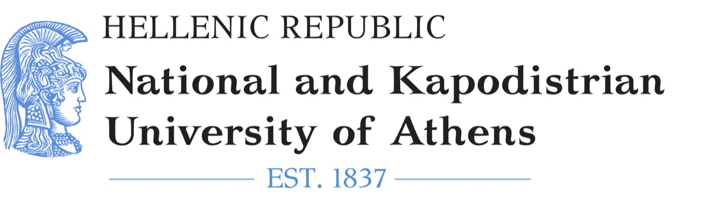

National and Kapodistrian University of Athens
Department of Pharmacy, National and Kapodistrian University of Athens, University Campus, 15784 Athens, Greece.
Biomedical Data Science & Mathematical Modeling
Professor Department of Pharmacy, National and Kapodistrian University of Athens


Professor Vangelis D. Karalis works at the intersection of biomedical sciences, artificial intelligence, data science, and mathematical modeling, with applications in clinical research, pharmacometrics, and computational medicine. His interdisciplinary research integrates quantitative, computational, and clinical approaches to advance modern healthcare, pharmaceutical sciences, and fundamental scientific understanding.
Department of Pharmacy, National and Kapodistrian University of Athens, University Campus, 15784 Athens, Greece.
Computational Pharmacology group, Institute of Applied and Computational Mathematics (IACM), Foundation for Research and Technology Hellas (FORTH), Heraklion, Crete.
Data science and mathematical modeling in pharmaceutical and medical sciences.
Research
Publications are organized into three sections according to their scope, contribution, and publication venue.
Articles that introduce new scientific concepts, frameworks, models, or methodological directions.
GET is a novel statistical measure for revealing hidden patterns in the gaps between observations, beyond what the t-test can capture.

VBC is an alternative framework for considering endpoints in clinical studies. It treats endpoints as vectors in an N-dimensional space.

The use of generative artificial neural networks, including Normalizing Flow, WGANs, and VAEs, for synthesizing virtual subjects, thereby reducing the need for actual human exposure and reducing time and costs.

AS is a new pharmacokinetic parameter proposed to express more appropriately the rate of absorption and replace Cmax. AS is calculated directly from the concentration-time data without any assumptions.

This research direction introduces the use of machine learning approaches in bioequivalence studies.

IVIVS introduces a semi-physiological modeling approach proposed to predict the outcome of a bioequivalence study based on in vitro dissolution data.

Applied and methodological research articles in pharmacometrics, pharmacokinetics, and bioequivalence.
Links